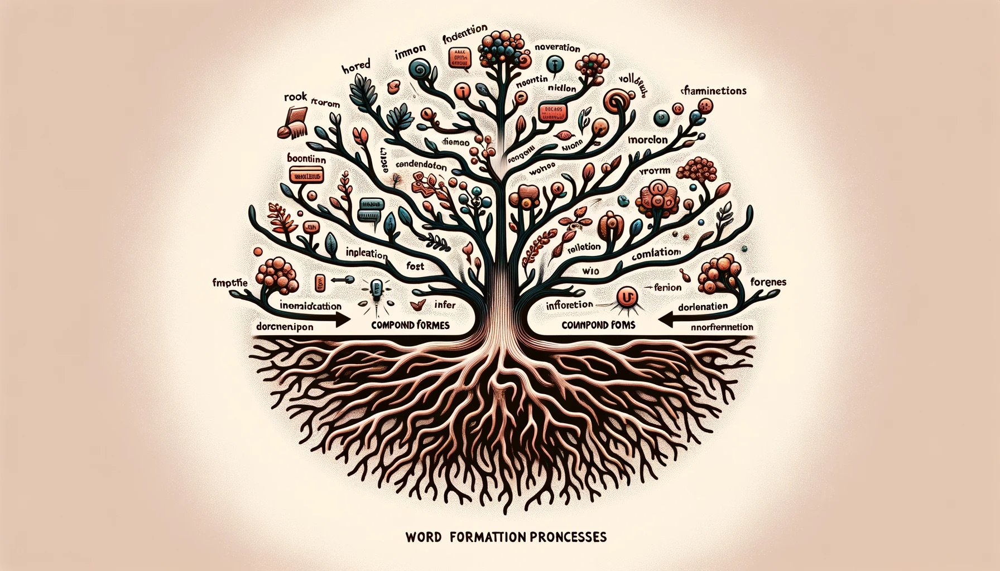
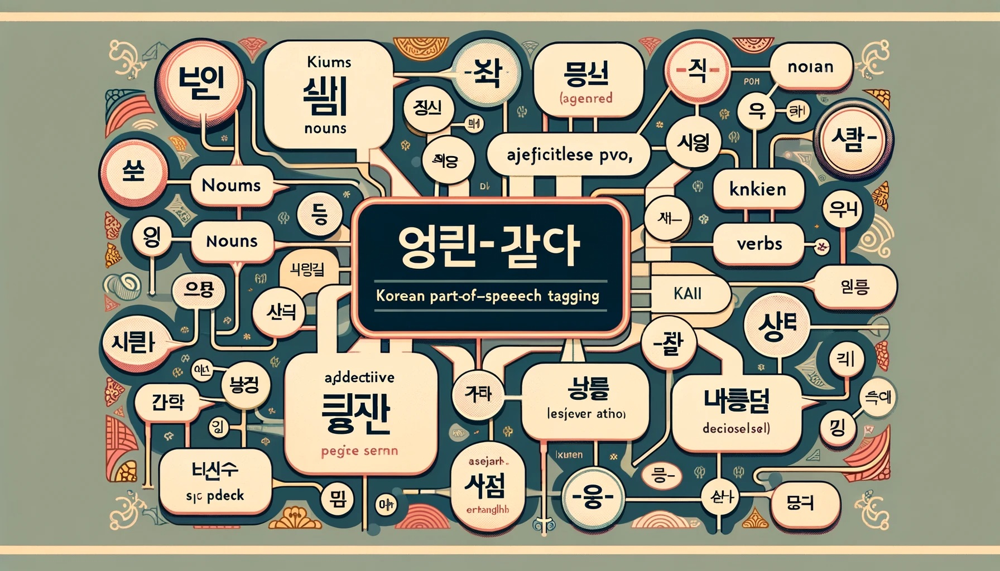

자연어처리 기법#
토크나이제이션#
토크나이제이션이란?#

정의: 문자열을 토큰의 리스트로 분할하는 과정
첫 단계: NLP 파이프라인에서의 첫 번째 단계로, 기계가 이해할 수 있는 언어로 번역하는 시작점
단순화: “I like to eat apples”와 같은 간단한 문장도 토크나이제이션을 통해 [“I”, “like”, “to”, “eat”, “apples”]로 분해됨
모호성: 문장의 구조가 복잡하거나 언어가 다양할수록 토크나이제이션은 더 복잡해짐
중요성: 토크나이제이션은 임베딩과 신경망을 포함한 복잡한 NLP 시스템의 기초를 형성함
토크나이제이션의 복잡성#

문제 1: 단어의 결합과 분리
“ice cream”, “website” 등과 같이 다양한 방식으로 단어가 결합되거나 분리될 수 있음
문제 2: 공백이 없는 다른 언어 체계
중국어와 같이 단어 사이에 공백을 사용하지 않는 언어들이 존재
문제 3: 축약과 클리틱
“doesn’t”, “I’m” 등과 같은 영어의 축약 형태 또는 이탈리아어의 “dirglielo”와 같은 클리틱이 존재
영어에서의 다양한 단어 형태#

대소문자 변화: “cat”, “Cat”, “CAT” 등 다양한 형태로 표현됨
약어 및 하이픈 사용: “US-based”, “US based”, “U.S.-based” 등 다양한 스타일 존재
지역적 철자 변이: “labor”와 “labour”, “materialize”와 “materialise”와 같은 영어의 지역별 철자 차이
오탈자: “teh”와 같이 흔한 오타가 발생할 수 있음
영어 단어의 다양성#
{kind=link}
단어의 개수: Google N-gram 코퍼스에는 1조 개의 토큰과 4천만 번 이상 나타나는 1천3백만 개의 단어 유형이 포함됨
단어 지식: 일반적으로 성인은 약 3만 개의 단어를 알고 있으며, 유창함을 위해서는 적어도 5천 개의 단어를 알아야 함
단어 빈도: 함수어는 매우 빈번하게 사용되며, 대부분의 내용어는 매우 드물게 사용됨
단어 형성 과정#
{kind=link}
활용: 단어의 형태가 변화하는 과정. 예: 동사 “to be”의 다양한 형태 (“I am”, “you are”, “he is” 등)
파생: 같은 기본 또는 뿌리에서 새로운 단어를 만드는 과정. 예: “grace”에서 “disgrace”, “disgraceful”, “disgracefully”로 변화
복합어 형성: 두 개 이상의 단어를 결합하여 새로운 단어를 형성하는 과정. 예: “Ice cream”, “ice cream cone”
형태소와 형태#

어간(Stem): 대부분의 단어는 어간과 하나 이상의 접사로 구성됨. 예: “disgracefully”에서 “grace”는 어간
접사(Affixes): 접두사 또는 접미사의 형태로 나타남. 예: “disgracefully”에서 “dis-”, “-ful”, “-ly”가 접사
복수 명사: 대부분의 명사는 단수 형태에 “-s”를 추가하여 복수 형태를 만듦. 예: “book” → “books”
과거 시제 동사: 대부분의 동사는 기본형에 “-ed”를 추가하여 과거 시제 형태를 만듦. 예: “walk” → “walked”
한국어 토크나이제이션#
한국어 토크나이제이션의 어려움#

문장 분리의 정의: 텍스트를 개별 문장으로 나누는 과정
영어와의 차이점: 영어와의 차이점: 영어에서는 문장의 끝에 마침표와 같은 문장 부호를 사용하여 문장을 구분하지만, 한국어에서는 마침표를 사용하지 않는 경우가 흔함
단어 분리: 한국어의 경우 단어가 공백으로 구분되지 않음
한국어 품사 태깅#
{kind=link}
품사 태깅의 정의: 문장 속 각 단어에 품사를 할당하는 과정
한국어의 품사 체계: 체언, 수식언, 관계언, 독립언, 용언 등 5언 9품사 체계를 사용
용언의 중요성: 동사와 형용사는 어간과 어미를 결합하여 단어 형성
품사 분류 기준: 기능, 의미, 형태를 기준으로 분류
언어적 다양성: 품사 태깅은 한국어의 복잡한 형태론적, 구문론적 구조를 이해하는 데 필수적임
한국어의 5언 9품사
언
품사
체언
명사, 대명사, 수사
수식언
관형사, 부사
관계언
조사
독립언
감탄사
용언
동사, 형용사
한국어 형태소 분석#

형태소 분석의 정의: 단어를 가장 작은 의미 단위(형태소)로 분해하고 적절한 품사 태깅을 하는 과정
예시 문장 분석: “나는 그 과자를 먹었다”는 나(대명사) + 는(조사) + 그(대명사) + 과자(명사) + 먹(동사) + -었(선어말어미) + -다(어말어미) + .(문장부호)로 분석
분석 수준: 형태소, 구문, 의미, 담화 등 다양한 수준에서 분석 가능
언어의 이해: 형태소 분석은 한국어의 복잡한 구조를 이해하는 데 중요한 역할을 함
품사 할당: 각 형태소에 적절한 품사를 할당하는 것이 중요함
원문
나는 그 과자를 먹었다.
너는 그를 사랑하니?
형태소 분석
나(대명사) + 는(조사) + 그(대명사) + 과자(명 사) + 먹-(동사)+-었(선어말어미)+- 다(어말 어 미)+ .(문장 부호)
너(대명사) + 는(조사) + 그(대명사) + 사랑(명사) +-하(동사)+니(어말 어미) + ? (문장부호)
구문 분석
(S (NP 나/Noun) 는/Josa (NP 그/Noun 사 과/Noun) 를/Josa (VP 먹었다/Verb)./ Punctuation)
(S (NP 너/Noun) 는/Josa (NP 그/Noun) 를/ Josa (NP 사랑/Noun) (VP 하니/Verb) ?/ Punctuation)
의미 분석
술부: 먹다 행위자: 나 대상: 그 과자
술부: 사랑하다 행위자: 너 대상: 그
담화 분석
단순 서술
의문형
언어적(문법적) 분류#

고립어, 굴절어, 교착어: 언어의 분류에 따라 단어의 형성 방식이 다름
교착어의 특징: 한국어는 교착어로, 어간에 접사를 붙여 단어의 최종 의미를 결정함
고립어의 특징: 중국어와 티베트어와 같은 고립어는 단어 순서에 따라 의미가 결정됨
굴절어의 특징: 라틴어와 같은 굴절어는 단어 형태의 변화로 그 문법적 기능을 나타냄
언어의 다양성: 각 언어 유형은 그 언어의 특성과 구조를 반영함
한국어 형태소 분석 (품사 태깅)#

형태소 분석의 목적: 문장을 형태소 단위로 나누고, 품사 태깅을 하여 동사의 다양한 사용 현상을 복원하는 과정
분석 방법의 다양성: 분석기에 따라 형태소 분리 방법이 다를 수 있음
언어 처리의 기본: 모든 자연어 처리 과정에서 가장 기본적이고 중요한 역할을 함
활용의 정의: 어간이 어미를 취함으로써 변화하는 과정
규칙 활용과 불규칙 활용: 규칙 활용은 어간이 일정하게 유지되는 반면, 불규칙 활용은 어간이나 어미가 변화함
토픽모델링#
서론#
{kind=link}
데이터의 성장: 디지털 시대의 확장과 함께 비정형 텍스트 데이터의 양이 기하급수적으로 증가하고 있음
토픽모델링의 역할: 대규모 비정형 텍스트 데이터에서 정보를 요약하고 분석하는 데 있어 강력한 도구임
기본 원리: 문서 내 단어의 공존 패턴과 빈도를 분석하여 문서 집합의 기저 주제를 밝힘
차원 축소의 중요성: 문서-단어 행렬의 차원을 축소하여 문서를 주제의 혼합으로, 주제를 단어 분포로 표현함
PCA 대비 장점: PCA보다 더 해석하기 쉽고 문맥적으로 의미 있는 출력을 제공함
문서 군집화#
{kind=link}
군집화 기법: 텍스트 마이닝과 자연어 처리에서 문서를 내용이나 기능에 따라 그룹화하는 기술
코사인 유사도: 두 비제로 벡터 간의 각도 코사인을 측정하는 인기 있는 유사도 측정 방법
차원 축소: 차원의 저주로 인한 군집화 성능 저하를 방지하기 위해 차원 축소 기법을 사용함
군집화 알고리즘:
K-평균: 데이터 포인트와 각 클러스터 중심 사이의 제곱 거리 합을 최소화하는 파티션 클러스터링 알고리즘
DBSCAN: 데이터 포인트의 밀도를 기반으로 클러스터를 식별하는 밀도 기반 클러스터링 알고리즘
계층적 군집화: 각 데이터 포인트를 자체 클러스터로 시작하여 점차 가장 가까운 쌍의 클러스터를 병합하는 방식
잠재 디리클레 할당(LDA): 텍스트 말뭉치에서 문서 집합의 기저 주제를 발견하는 데 유용한 확률적 생성 모델
군집화 과정: 텍스트 데이터 전처리, 적절한 벡터 표현으로 문서 변환, 원하는 군집화 알고리즘 적용
토픽모델링의 과정#

텍스트 전처리: 토크나이제이션, 어간 추출, 불용어 제거 등의 전처리 단계 수행
벡터 표현: 문서를 TF-IDF 또는 단어 임베딩과 같은 적절한 벡터 표현으로 변환
모델 학습: LDA와 같은 토픽 모델을 사용하여 문서 집합의 주제를 학습
주제 해석: 학습된 토픽 모델로부터 얻은 주제를 해석하고 문서에 레이블링
응용: 문서 분류, 정보 검색, 문서 요약 등 다양한 응용 분야에 활용
토픽모델링의 도전 과제#

데이터의 다양성: 다양한 주제, 스타일, 언어를 포함하는 대규모 데이터셋 처리
모델 선택과 조정: 최적의 모델 구조와 파라미터를 결정하는 과정
주제의 해석성: 생성된 주제가 인간에게 이해하기 쉽고 의미 있는지 평가
변화하는 데이터: 시간에 따라 변화하는 데이터셋에 모델을 적용하고 적응시키는 능력
효율적인 계산: 대규모 데이터셋에 대한 모델 학습과 추론의 계산 효율성 향상
토픽모델링 방법론#
서론#

토픽모델링의 정의: 문서 집합에서 숨겨진 주제를 발견하는 비지도 학습 기법
기본 가정: 각 문서는 여러 주제의 혼합으로 구성되며, 각 주제는 단어 분포를 통해 표현됨
목표: 문서와 주제 사이의 관계를 파악하여 대규모 텍스트 데이터에서 의미 있는 인사이트를 추출
적용 분야: 문서 분류, 정보 검색, 문서 요약 등 다양한 텍스트 마이닝 및 자연어 처리 작업
주요 방법론: 확률적 잠재 의미 분석(pLSA), 잠재 디리클레 할당(LDA), 비음수 행렬 분해(NMF), 상관 토픽 모델(CTM), 동적 토픽 모델(DTM) 등이 있음
확률적 잠재 의미 분석 (pLSA)#

기본 개념: 문서와 단어 사이의 공존 패턴을 모델링하여 숨겨진 주제를 발견하는 기법
모델 구조: 각 문서를 주제의 혼합으로, 주제를 단어 분포로 모델링
학습 방법: 기대치 최대화(EM) 알고리즘을 사용하여 주제 분포와 문서-주제 관계 추정
장점: 숨겨진 주제를 효과적으로 밝힐 수 있음
단점: 오버피팅 경향, 새로운 문서에 대한 모델 적용 어려움, 매개변수 수의 선형 증가로 대규모 문서 집합에 대한 계산 비용 증가
잠재 디리클레 할당 (LDA)#

기본 개념: 문서가 주제의 혼합으로 구성되고 각 주제가 단어의 분포를 가진다고 가정하는 확률적 생성 모델
모델 구조: Dirichlet 사전 분포를 사용하여 주제 분포와 단어 분포를 모델링
장점: 오버피팅 문제 해결, 새로운 문서에 대한 일반화 가능, 주제의 해석 가능성 향상
응용 분야: 문서 군집화, 텍스트 요약, 정보 검색 등에서 널리 사용됨
학습 방법: 변분 추론 또는 MCMC 샘플링을 사용한 모델 파라미터 추정
비음수 행렬 분해 (NMF)#

기본 개념: 문서-단어 행렬을 두 개의 비음수 하위 차원 행렬로 분해하여 주제를 모델링하는 선형 대수 기법
모델 구조: 문서-주제 행렬과 주제-단어 행렬로 분해하여 문서와 주제 사이의 관계 표현
장점: 해석 가능한 주제 생성, 확률적 기반 모델이 아닌 경우에도 적용 가능, 주제 간의 구조적 관계 표현 용이
단점: 확률적 해석의 부재, 비유일 해의 가능성
응용 분야: 텍스트 데이터의 차원 축소, 주제 기반 문서 군집화 등에 활용됨
동적 토픽 모델 (DTM)#

기본 개념: 시간에 따른 주제의 진화를 모델링하여 문서 집합의 시간적 구조 분석
모델 구조: 시간 슬라이스별로 문서를 나누고, 각 시간 슬라이스에 대한 LDA 모델 생성
장점: 시간에 따른 주제 변화 포착, 시간적 구조를 가진 텍스트 데이터 분석 가능
응용 분야: 뉴스 기사, 과학 논문, 소셜 미디어 데이터의 시간적 트렌드 분석
학습 방법: 변분 추론과 특수화된 알고리즘을 사용한 시간적 의존성 모델링
감정 분석#
서론#

감정 분석 정의: 텍스트에 내포된 감정이나 의견의 성향을 파악하는 과정
적용 분야: 소셜 미디어, 제품 리뷰, 고객 피드백, 뉴스 기사 등 다양한 텍스트 소스에서 활용됨
목적: 기업이나 조직이 고객, 사용자, 대중의 감정을 이해하는 데 도움을 줌
분석 유형: 극성 기반, 감정 기반, 측면 기반 분석 등 다양한 접근 방식 존재
기술적 접근: 규칙 기반, 기계 학습, 심층 학습 등 다양한 기술을 통해 수행됨
감정 분석 유형#

극성 기반 분석: 긍정, 부정, 중립으로 텍스트의 감정을 분류. 단어나 구절에 감정 점수를 할당하고 이를 집계
감정 기반 분석: 행복, 슬픔, 분노 등 구체적인 감정을 식별. 감정 어휘 사전이나 레이블링된 데이터에 기반한 기계 학습 모델 사용
측면 기반 분석: 텍스트 내 다양한 측면이나 속성에 대한 감정을 파악. 예를 들어 제품 리뷰에서 가격, 품질, 사용성에 대한 감정을 분류
감정 분석 기법#

규칙 기반 방법: 정의된 규칙과 감정 어휘 사전을 활용하여 텍스트의 감정을 판단
기계학습: 로지스틱 회귀, 서포트 벡터 머신, 나이브 베이즈 분류기 등을 사용하여 감정 분석 모델을 구축
딥러닝: RNN, LSTM, Transformer 모델 등을 활용하여 고성능의 감정 분석 모델을 개발
감정 분석의 도전 과제#

비꼬기와 아이러니: 문자 그대로의 의미와 반대되는 감정을 표현하기 때문에 분류가 어려움
부정과 이중 부정: 부정이 감정의 방향을 바꾸거나 모호하게 만듦
분야 특정 언어: 다양한 분야에서 감정 표현이 다르기 때문에 한 분야에서 학습된 모델이 다른 분야에서 잘 작동하지 않을 수 있음
문맥과 세계 지식: 문화적 참조, 역사적 사건, 분야 특정 지식 등이 감정 분석에 필요함
모호성과 다중 감정: 하나의 텍스트에 여러 감정이나 다양한 대상이 포함되어 있을 수 있음
감정 분석의 응용#
{kind=link}
소셜 미디어 모니터링: 제품, 서비스, 브랜드에 대한 대중의 의견 추적
고객 피드백 분석: 고객 만족도 향상과 개선 영역 식별을 위한 자동 분석
시장 연구 및 분석: 시장 동향, 기회, 위협 식별을 위한 뉴스 기사, 블로그 포스트, 온라인 포럼 분석
정치 분석: 정치인, 정당, 정책에 대한 대중의 의견 분석
직원의 목소리 분석: 직원 피드백 분석을 통한 직원 감정 이해 및 개선 영역 발굴